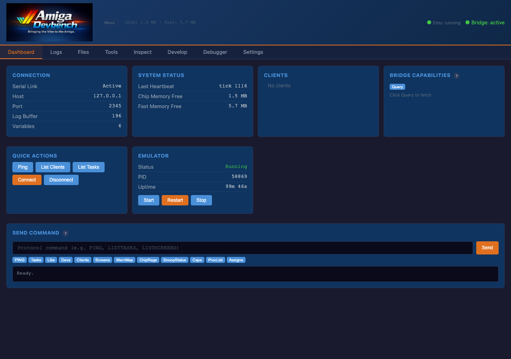
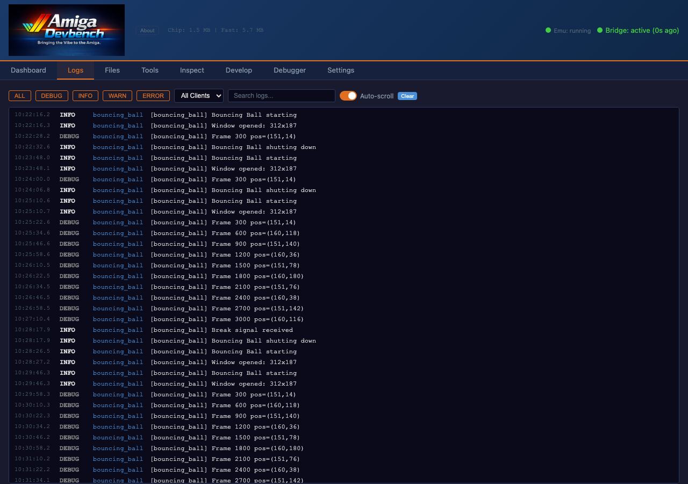
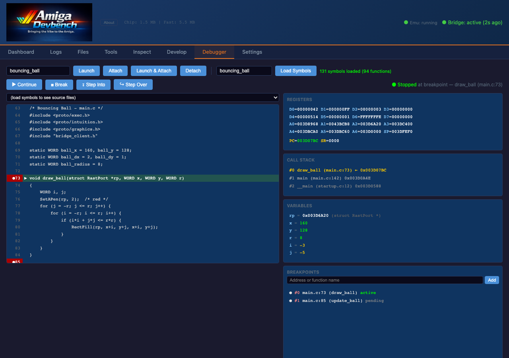
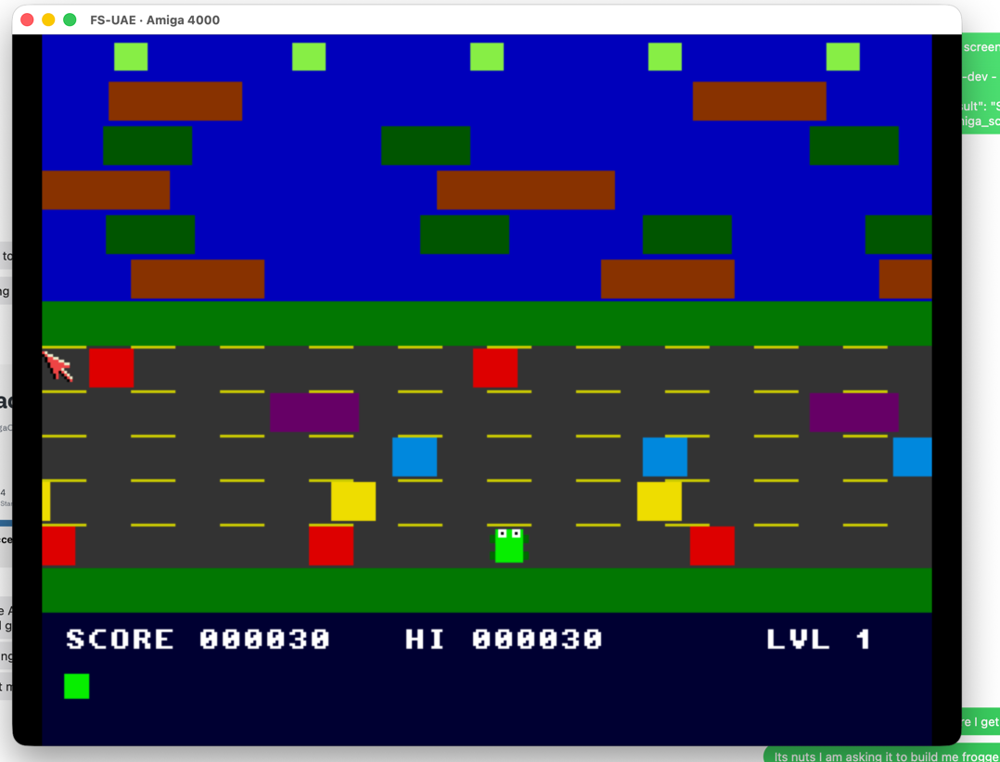
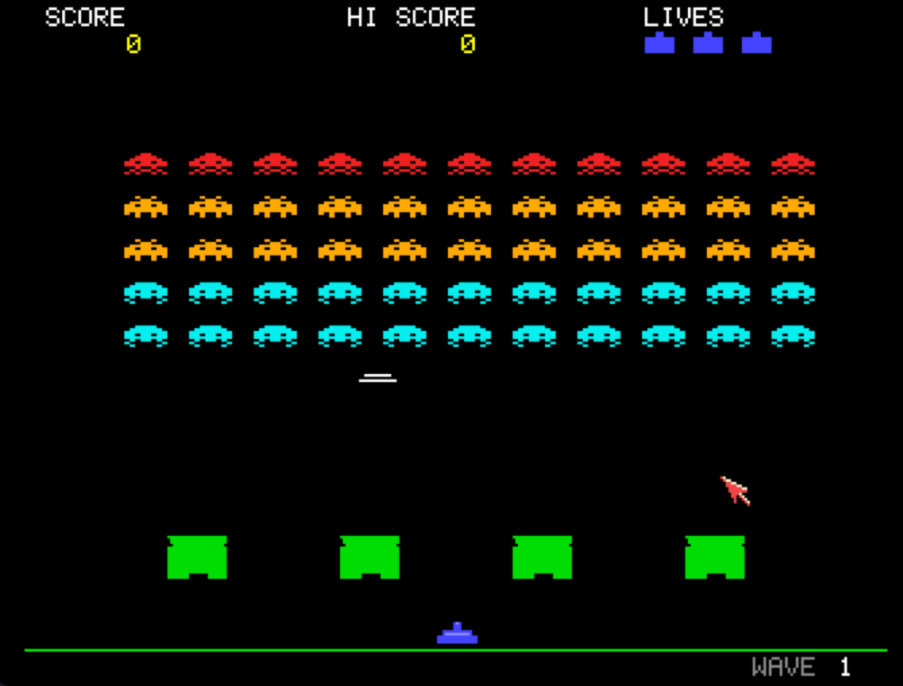
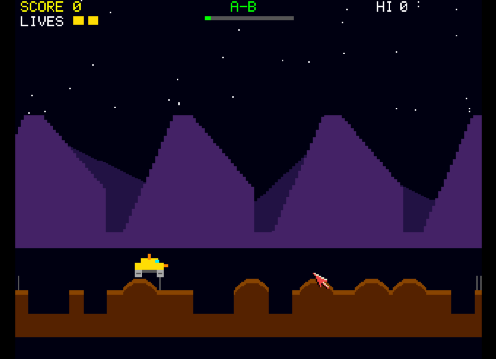
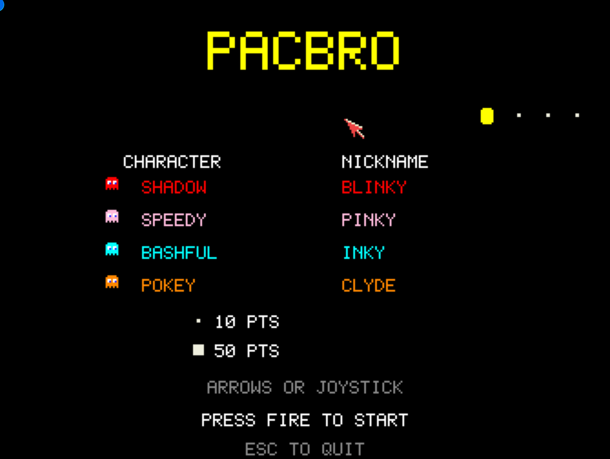
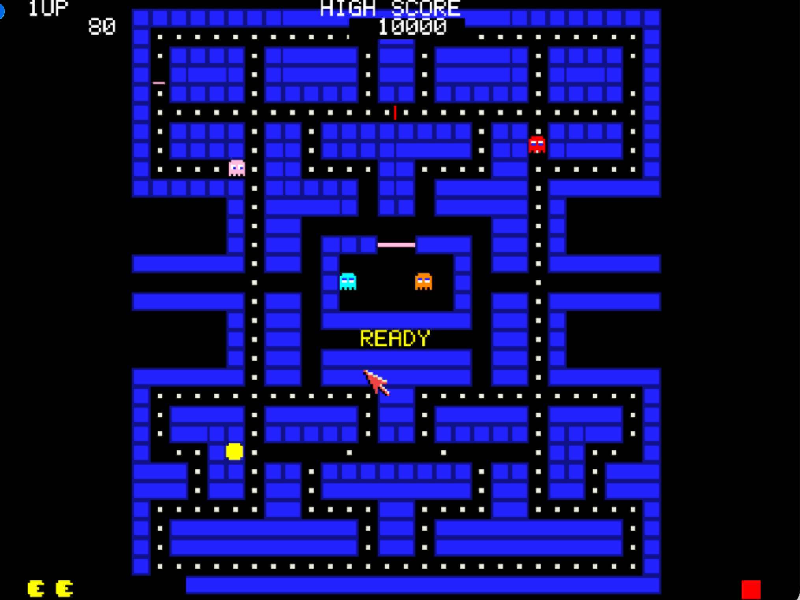

Bringing AI-Powered Development
to the Amiga

Sacramento Amiga Computer Club • 2026
Chris Collins • chris@hitorro.com
Goes beyond autocomplete. The AI agent can:
You describe the what.
The agent figures out the how.
"Create me a Planet Patrol game for the Amiga with multi-layer parallax scrolling, ProTracker music, 6 enemy types, a scanner minimap, smart bombs, hyperspace, keyboard and joystick support, and a high score table saved to disk."
→ Working game produced in one conversation
8 source files, 2000+ lines, MOD music, SFX,
bridge integration for live testing
AI agents need a tight feedback loop.
The Amiga doesn't give them one. Not by default.
AI agents are powerful coders — but they need to see what's happening.
Without tooling, the AI can write Amiga code
but has zero ability to verify it works.
Can't see the screen
Can't read crash info
Can't inspect memory
Can't press keys to test
Can't browse the filesystem
DevBench gives the AI
eyes, ears, and hands.
Model Context Protocol — an open standard that lets AI call functions in the real world.
Every tool returns structured data that Claude can reason about and act on.
Build & Deploy — compile, deploy, launch, stop, run tests
Inspect — memory, tasks, libraries, screens, chip registers
Debug — breakpoints, step into/over, backtrace, registers
Graphics — screenshots, palette, copper list, sprites
Files — read, write, transfer, directory listing, assigns
Control — keyboard/mouse injection, ARexx, reboot
App Integration — logs, variables, hooks, SnoopDos
Same tools available to both Claude (AI) and the Web UI (human).
Your Amiga app links libbridge.a — giving it superpowers the AI can use.
All over a serial link — works on real A500/A1200 hardware with a null-modem cable.
Real-time inspection and control at http://localhost:3000

Real-time logs streaming from Amiga apps

Source-level debugger with breakpoints & registers
amiga_build — compiler errors return to Claude
amiga_screenshot — Claude sees the actual display
amiga_call_hook — "status" returns game state
amiga_get_var — read score, lives, frame count
amiga_set_var — set lives=0 to test game over
amiga_input_key — automated play-testing
amiga_log — debug output in real-time
The key insight: every step where the AI needs feedback has an MCP tool that provides it. The loop is write → build → deploy → observe → adjust, and the AI can do it all autonomously.
All created through AI-assisted development with DevBench

Frank the Frog

Alien Storm

Lunar Rider

PacBro

PacBro Gameplay
93 MCP tools for Amiga development
27,000+ lines of code (Python + C)
31 example programs including 14 games
80+ bridge protocol commands
20+ web UI inspection tools
Source-level 68k debugger
Questions & Demo
Chris Collins
chris@hitorro.com
github.com/geekychris/amiga_mcp
This is early work — rough edges and all.
If you're interested in hacking on it together,
I'd love to find some kind souls to collaborate with.
Let's make it better.
sacc.org
"We made Amiga, they fucked it up." — RJ Mical
Let's un-fuck it. With AI.